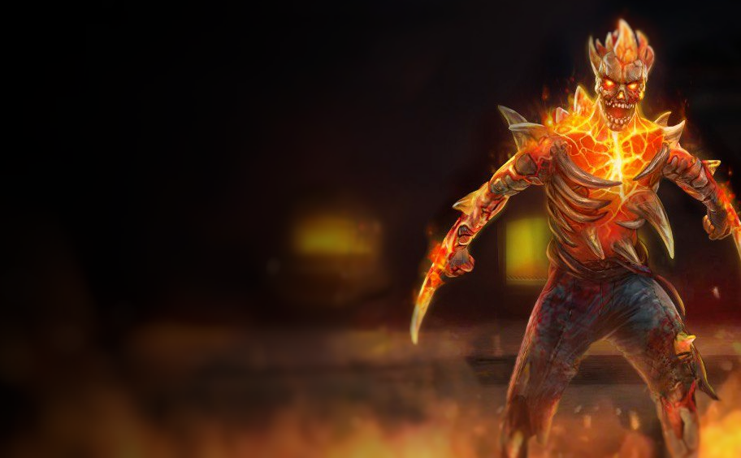

Сгоревший Ресторан
Что с собой брать?
- Рюкзак:
На 10+ слотов. Зачистка Сгоревшего Ресторана не требует большого количества предметов, даже убийство босса.
- Оружие:
- -2 AKM-A "Буран" или что-то подобное на вашем уровне - для убийства обычных огненных мобов, особенно огненных когтей и хватов.
- -СВДК, Мосинка или любая другая снайперская винтовка, доступная на вашем уровне - для нанесения урона с дальней дистанции.
- -Глок-18C или любой другой пистолет - для обычных горелых и Туш, чтобы сохранить автоматы и винтовки.
- Броня:
Возьмите сет Проводника или что-то подобное на вашем уровне/ранге. Легендарную броню следует брать только на Мясника, об этом в другом гайде.
- Метательное:
В Ресторане много аномалий типа "Чёртова Свеча", для которых вам понадобится много метательного оружия. Возьмите 20 чёртовых ежей или же около 1,5 стака тактических томагавков. Также вам нужно принести самое простое метательное оружие, которое у вас есть, напимер, метательные топорики.
- Экипировка:
Обязательно возьмите Гаситель, а во втором слоте я рекомендую использовать Вьюгу, чтобы увеличить периодический урон холодом.
- Баффы и расходники:
Вам нужно использовать весь свой декор, чтобы увеличить урон, ХП и многое другое. Из расходных материалов возьмите: стак-два перевязочных пакетов, 10 стимуляторов "Феникс" на всякий случай, и если нет Гасителя, возьмите стак огнетушителей. Запаситесь едой и водой.
- Другое:
Вам нужно взять 7 вешек и выбрать вело-модификацию для меньшего износа вашей брони или оружия (это зависит только от вас и вашей ситуации в игре). Возьмите несколько отмычек 3-го уровня, чтобы открыть комнату с возможностью выпадения легендарной брони.
Прохождения и советы
- Против обычных горелых и Туш используйте пистолеты, чтобы проходить экономнее.
- Все мобы в Кричащем Лесу уязвимы к глубоким ранам.
- На территории перед входом в ресторан для нанесения большего урона горелым используйте кусты.
- После того, как вы убили любого огненного моба, он взорвётся, нанося большой урон по площади. Чтобы этого избежать, не подпускайте подобных врагов близко к себе, когда у них мало здоровья. Если уже так вышло, у вас будет небольшое время, чтобы выбежать из зоны взрыва.
- Всех огненных когтей и хватов убивайте с помощью автоматов или чего-то ещё, что наносит периодический урон холодом
- Чтобы расчистить место под вешку, используйте ваше самое простое метательное оружие, так как тратить ежи и томагавки на них не очень экономно.
- При очищении места для вешки есть шанс спавна Чёртовой Свечи, будьте к этому готовы.
- Чтобы убить Чертову Свечу, используйте чертовы ежи или же тактические томагавки.
- Будьте готовы к внезапному появлению мобов за вашей спиной, когда вы открываете двери по пути к входу в подземную часть аномальной зоны.
- При открытии одной из дверей в наземной части ресторана за отмычки 3-го уровня, вы можете найти сумку, в которой лежит рандомная часть какого-то легендарного сета брони.
- Когда вы вошли в подземную часть ресторана, возьмите ваше самое сильное морозное оружие и будьте готовы сразиться сразу с 2-мя, а то и с 3-мя огненными мобами. Это будет непросто из-за довольно маленького пространства для боя.
- В коридоре к подземелью Мясника вас встретят трубы с горячим воздухом, струи которого могут вас обжечь и нанести неплохой урон. Будьте осторожны, не попадайтесь под эти струи.
- Чтобы игра не лагала и не тормозила, перед началом прохождения обязательно очистите кэш вашего устройства и установите минимальные настройки графики в самой игре. Это поможет пройти локацию более комфортно и без сложных моментов.
Польза и выгода
Что можно найти?
- Кипящая кровь Мясника [Артефакты, Предметы для Торговли]
Довольно редкий артефакт, позволяет покупать у Перекупа различное оружие. Одно убийство Мясника даёт 7 таких артефактов.
- Череп Мясника [Артефакты, Предметы для Торговли]
Очень редкий артефакт, один такой можно получить за убийство Раскаленного Мясника в Сгоревшем Ресторане. Как именно его убить вы можете найти в разделе “Боссы”.
- Качественная броня и оружие
- Легендарная броня
- Различные предметы для торговли
- Различные редкие ресурсы
Зачем проходить?
- Сгоревший Ресторан - довольно выгодная аномальная зона. Она содержит много ресурсов и предметов для торговли, но самое главное - лут за убийство Мясника. За кипящую кровь вы можете приобрести различное оружие со стихийным уроном, а за 5 убийств Раскаленного Мясника вы можете получить ящик с невероятно крутым и полезным лутом. Туда входит 100% шанс выпадения Тесака Мясника (очень крутое легендарное оружие ближнего боя), а также около 2-х сетов легендарной брони, 5 различных легендарных пушек и полезная для аномальных зон экипировка. Гайд для прохождения Мясника в двух его формах вы можете найти в соответствующем разделе.
Остальная информация
-
СТАТУС КО-ОПа: Это локация для одиночной игры, вы не можете играть тут с другими игроками.
-
СТАТУС СМЕРТИ: Если вы умрёте, ваши вещи появятcя на Пристани Сгоревшего Ресторана, но при этом они потеряют часть своей прочности.
-
СТАТУС СЛОЖНОСТИ: [Опасно] Опасная аномальная зона. Ранг 4 и больше (52+ ур)
-
ТЕМПОРАЛЬНАЯ АКТИВНОСТЬ: Темпоральный сброс - 24 часа